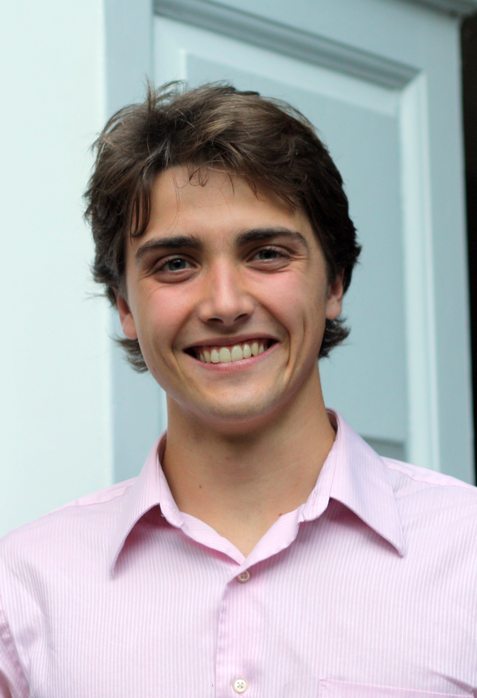
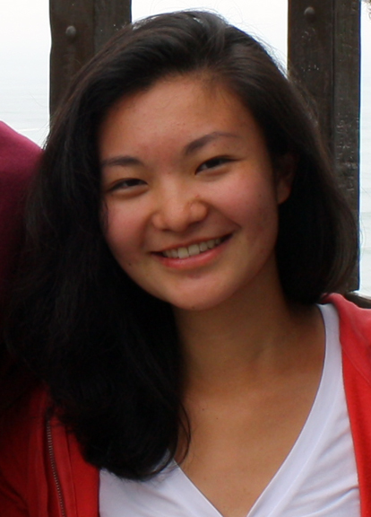
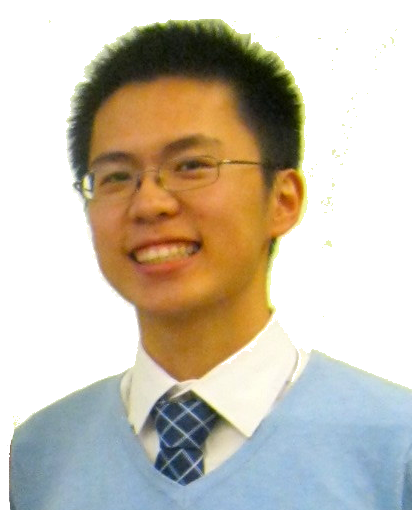
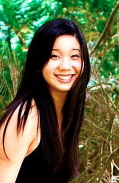

Jeffrey M. Robbins, LICSW is a Senior Clinical Social Worker in Neurology at Brigham and Women's Hospital (BWH) and a Teaching
Associate in Neurology at Harvard Medical School. He is the co-founder of The Eleanor Robbins Community Program: Caring For Each Other (1997) and
the co-founder of Camp Wee-Kan-Tu: A Camp For Champs, the first overnight summer camp for children with epilepsy in New England (1998). In
addition to his work at BWH, Mr. Robbins has a private practice in Danvers. His mother, Elly, who spent the last 11 months of her life in a
nursing home on a dementia unit, was the first recipient of a visiting buddy in 1995.
Ryan Christ Founder, Co-Director

Ryan Christ is a Senior studying Applied Mathematics in Biology. He became interested
in Alzheimer's disease before coming to Harvard while taking care of family members with the disease at home in
Delaware. He uses statistical models to investigate the genetic basis of the disease as a member of the De Jager Lab
at Brigham and Women's Hospital. Ryan's interest in connecting with other people led him to Tanzania where he
volunteered as one of four Harvard undergraduates to help pilot a new mobile clinic program. In his future career, he
hopes to continue advocating for Alzheimer's patients and using statistics to investigate paths to treatments.
?Outside of medicine and mathematics, he enjoys reading history and playing the saxophone.
Jessica Zuo Co-Director

Jessica is a Senior studying Neurobiology and Global Health and Health Policy. She has always
been fascinated by memory and memory disorder--they're what led her to neurobiology and later Alzheimer's Buddies!
When she isn't working on Alzheimer's Buddies, you can find her working at the Psychiatry Neuroimaging Lab, taking
meeting notes and event photos for the Dunster House Committee (go meese!) and venue managing campus performances for
the Office for the Arts.
Kuo-Kai Chin Co-Director

Kuo-Kai is a sophomore in Eliot House studying Chemical and Physical Biology with a planned secondary
in Computer Science. He is keenly interested in the future of elderly care, having been brought up
in with strong family values, and is greatly excited by the continuous growth of the Alzheimer's Buddies
program. He is a big sports fan and loves chatting about baseball, especially the Yankees and Red Sox, with his buddy.
Aside from being a co-director of the Alzheimer's Buddies, he works at the Shi Lab at Boston
Children's Hospital and is also working on an initiative to update and publish a guide to high school
research called Success with Science.
Michelle Wang Co-Director

Michelle is a junior in Quincy House joint concentrating in Neurobiology and Studies of Women, Gender & Sexuality. She became interested in geriatric care through bringing a music program to a nursing home of residents with late stage Alzheimer's during high school and witnessing the beauty of intergenerational friendships. Outside of Alzheimer's Buddies, she is a bit of a neurobiology and maternal health junkie and is the founder and President of the Harvard Undergraduate Maternal Health Initiative and she also works in the Kraviz Lab at Harvard Medical School (aka the fruit fly fight club ) where she studies the mechanisms of memory in Drosophila aggression. She also enjoys cooking and eating delicious food and reading short stories and the NY Times Modern Love column (especially on Sundays to her wonderful buddy).